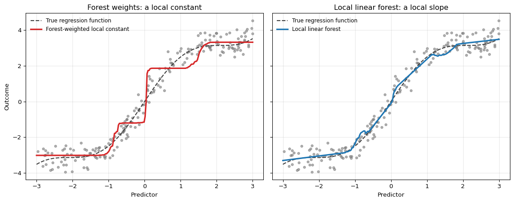

Under active development. A stable version is expected in November 2026. Feedback is welcome by email or via GitHub issues.
13 Advanced Tree-Based Methods
13.1 Overview
The previous chapters treated trees, random forests, and gradient boosting mainly as tools for conditional-mean or conditional-event-probability prediction. In many econometric applications, that is not enough. A risk manager may need conditional quantiles of future losses, a central bank may care about the probability of extreme inflation outcomes, and an asset-pricing application may require a full predictive distribution rather than a point forecast.
This chapter extends tree-based methods in that direction. Two of the three methods below share a single observation: a fitted forest supplies neighborhood weights w_i(x_0) around a forecast point x_0, and the leaf mean is only one of many quantities that can be estimated from them. We focus on three ideas:
Quantile Regression Forests (QRF), which reuse random-forest neighborhoods to estimate conditional distributions nonparametrically (Meinshausen 2006)
Local linear forests (LLF), which reuse the same neighborhoods but replace the constant inside a leaf with a local linear fit, reducing the bias a piecewise-constant rule leaves on smooth regression functions (Friedberg et al. 2021)
Natural Gradient Boosting (NGBoost), which extends boosting to parametric predictive distributions and updates their parameters with gradients rescaled by local statistical information (Duan et al. 2020)
QRF and NGBoost estimate the same object by different routes; LLF estimates a different object, a conditional mean, and belongs here because it shares QRF’s construction rather than its target.
The chapter remains predictive rather than structural: it does not estimate causal effects, and it does not develop the general local-estimating-equation framework (Athey, Tibshirani, and Wager 2019), of which the local linear forest below is one instance.
13.2 Roadmap
We start from the standard random-forest weight representation and use it to diagnose what ordinary forests do and do not provide.
We then define QRF through weighted empirical cumulative distribution functions (CDFs) and leaf-neighbor outcomes.
We turn to local linear forests, which keep those weights and change the local model from a constant to a linear function.
Next we introduce NGBoost as a boosted-tree method for fitting the parameters of a conditional distribution.
We explain how Fisher information rescales the gradients used in the boosting updates.
We close with a comparison, summary, pitfalls, and exercises.
13.3 Standard Forests as Weighted Averages
Recall from the random-forest weight representation that a forest prediction can be read as a weighted average of training outcomes that frequently land in the same leaves as the forecast point. Write the training data as (x_i,y_i)_{i=1}^{N}, with x_i\in\mathbb R^d and y_i\in\mathbb R, and let x_0\in\mathbb R^d be the forecast point. For a forest of B trees, let L_b(x_0) denote the terminal leaf reached by x_0 in tree b, and let N_b(x_0) count the original training observations assigned to that leaf, each counted once (Meinshausen 2006).1 The resulting neighborhood mean is
This representation is a useful way to read a forest. The weights w_i(x_0) define a local neighborhood around x_0, but the neighborhood is learned by recursive splits rather than fixed by Euclidean distance. The fixed-distance version of this construction is the classical kernel smoother, whose basic idea the kernel smoothing primer introduces.
Why This Matters
The weight view separates two ingredients:
the forest learns which training observations are local neighbors of x_0
the prediction rule decides what to do with the outcomes of those neighbors
A standard random forest uses those neighbors to estimate a conditional mean. QRF uses the original-observation neighbors to estimate a conditional distribution.
13.4 Limitations of Standard Random Forests
The weighted-average view also makes the limitations of ordinary forests clear.
Only a point prediction. A standard regression forest returns an average of training outcomes in forest-defined neighborhoods. Under squared-error risk and conditions that make this weighted average consistent, its population target is the conditional mean \mathbb{E}[Y\mid X=x_0]. It does not directly report tail probabilities, quantiles, skewness, or multimodality of Y\mid X=x_0.
Constant local model. Inside each leaf, the local prediction is an average. The leaf therefore cannot represent a within-neighborhood slope even when the regression function is locally smooth rather than locally constant.
Prediction, not causality. The forest neighborhood is chosen to improve prediction. A split or variable importance measure should not be interpreted as a treatment effect or structural parameter without an identification design.
13.5 Quantile Regression Forests as Distributional Forests
A distributional forest returns an estimated conditional distribution rather than only a point prediction. We use that phrase descriptively; the specific estimator developed here is QRF. QRF keeps the forest neighborhood idea but changes the object estimated from the neighbors. Instead of reporting only
This is a weighted empirical distribution of the training outcomes. Once we have \hat F(y\mid X=x_0), we can compute conditional medians, nominal prediction intervals, lower-tail probabilities, and other distributional functionals. For example, the interval from the estimated 10th to the estimated 90th conditional quantile is a nominal 80% prediction interval: it is intended to contain 80% of future outcomes. Its actual coverage must be checked on suitable out-of-sample data.
QRF focuses on conditional quantiles. For a probability level \alpha\in(0,1), the estimated conditional quantile is
In practice, sort the training outcomes and accumulate their weights. The estimated \alpha-quantile is the first outcome where the cumulative weight reaches or exceeds \alpha.
A small QRF forecast. Suppose we forecast a firm’s sales growth next quarter using predictors observed this quarter. For its predictor values x_0, three fitted trees select different neighbors from six historical observations whose outcomes are already known. Figure 13.1 shows the four observations in each reached leaf, the resulting weights, and the weighted CDF. Follow the highlighted observation with 0% growth through all three panels.
Figure 13.1: A QRF forecast from three illustrative tree leaves. Top left: each box contains the historical sales-growth outcomes in the leaf reached by the same predictor vector x; each tree contributes weight 1/3. Bottom left: observation weights after averaging across trees. Orange highlights the same 0% observation in each leaf and its final weight. Right: the weighted empirical CDF; filled and open circles mark included and excluded endpoints of each jump. Dashed guides locate the 10th, 50th, and 90th percentiles. Green shading marks the nominal 80% prediction interval from −2% to 4%.
Each tree contributes total weight 1/3, divided equally among its four neighbors. The observation with 0% growth appears in all three leaves, so its final weight is 1/4. The cumulative weight first reaches 0.5 at 0% growth, giving a median forecast of 0%. The estimated 10th and 90th percentiles are −2% and 4%, yielding the nominal 80% prediction interval [-2\%,4\%].
Consistency of the estimated distribution
For independent and identically distributed (i.i.d.) observations with a fixed number of predictors, Meinshausen (2006) establishes, under the conditions summarized below, that for each fixed x_0,
The approximation error vanishes uniformly over outcome thresholds y at that x_0. The intuition is a bias–variance tradeoff: leaf neighborhoods must shrink as the sample grows, while the number of observations in each leaf increases. Temporal or clustered dependence requires a separate consistency argument.
Optional: Assumptions and inference
The theorem assumes a predictor density bounded above and away from zero on its support, a conditional CDF that is Lipschitz in x_0, and sufficiently balanced splits that give every predictor a positive chance of being selected. Leaf sizes must grow while remaining a vanishing fraction of the sample. A strictly increasing conditional CDF is additionally used to obtain consistency of the estimated quantiles.
Default RandomForestRegressor settings do not enforce these conditions. Good out-of-sample performance alone does not establish the theorem’s assumptions.
Consistency also does not supply an inference procedure. Honest forests, which use disjoint observations to choose splits and estimate leaf values, have a separate inference theory requiring additional conditions (Wager and Athey 2018; Athey, Tibshirani, and Wager 2019).
Question for Reflection
Why can two forests with the same conditional-mean prediction still give different conditional quantile estimates?
Suggested Answer
The conditional mean uses only a weighted average of neighboring outcomes. Conditional quantiles depend on the full weighted empirical distribution of those outcomes. Two neighbor distributions can have the same mean but different spread, skewness, or tail mass, so their quantiles can differ even when the mean prediction is identical.
13.6 Econometric Use and Limits of QRF
QRF is attractive when heteroskedasticity or tail risk is central. Examples include volatility forecasting, downside return risk, firm default loss distributions, and macroeconomic fan charts. It can adapt prediction intervals to the covariates because the neighborhood around x_0 changes with the forest partitions. The method is also used operationally outside economics: Taillardat and Mestre (2020) describe the calibration of surface temperature in the Météo-France operational forecasting chain with station-level QRF, and of hourly rainfall with a QRF variant that replaces the empirical leaf distribution by a fitted extended Pareto distribution, precisely to obtain tail mass that the observed neighbors do not contain.
The main advantage is flexibility: QRF does not impose a fixed parametric family on the conditional distribution and can represent skewness, heavy tails, and multimodality through the empirical neighbor distribution. This is the relevant sense in which the method is nonparametric. It is not assumption-free: the estimate is conditional on tuning choices and fitted quantiles cannot move beyond the support represented in the training outcomes. If the relevant tail event is rare, the local neighborhood may contain little information about it. Like ordinary forests, QRF also needs validation that respects dependence, publication lags, and forecast-origin information sets.
Figure 13.2 illustrates the method with the quarterly Federal Reserve Economic Data collection (FRED-QD)(McCracken and Ng 2020). The target is annualized gross domestic product (GDP) growth in quarter t+1, and the five predictors are dated quarter t.2 The horizontal axis records the target quarter t+1. Look for both the changing width of the central 80% interval, formed by the estimated 10th and 90th conditional quantiles, and its behavior during the pandemic observations.
Figure 13.2: QRF forecasts for one-step-ahead GDP growth (annualized log-difference of GDPC1) over the final 25% of FRED-QD quarters. The horizontal axis gives the target quarter. The blue band is the central 80% predictive interval spanning the estimated conditional 10th to 90th percentiles, the solid blue line is the estimated conditional median, and the gray line is realized GDP growth. Conditional quantiles use original-observation neighborhood weights from 200 trees with a minimum in-bag leaf size of five.
The interval width varies across the test period because the QRF neighborhood changes with the predictors. A homoskedastic fixed-shape location-scale model, such as a Gaussian location model with constant conditional variance, would instead impose a constant central-interval width around its conditional mean. Homoskedasticity alone would not do so if other shape parameters could vary with predictors. The estimated band is a central 80% predictive interval, not an automatic 80% coverage guarantee. Its marginal and conditional coverage are empirical calibration questions. The pandemic quarters expose the more immediate limitation. Realized growth reaches roughly -33 and then +30 annualized percent in 2020, while the forecast band remains far inside those values. By construction, \hat F(y \mid X=x_0) reweights outcomes observed in the training sample and therefore cannot place mass beyond their range. When the training neighborhood contains no comparable episode, changing the quantile level cannot recover the missing tail support.
This failure is the distributional counterpart of the extrapolation limit from the decision trees chapter: QRF interpolates among observed outcomes for the entire predictive distribution, not only for its mean. A parametric family with unbounded support, such as the NGBoost specification below, can represent outcomes beyond the training range via its parametric form but comes with its own assumptions. The two approaches are complementary: QRF is nonparametric and flexible but cannot extrapolate, while NGBoost is parametric and can extrapolate but requires a distributional assumption.
13.7 Local Linear Forests
QRF changed what is estimated from the forest neighborhood while keeping the neighborhood itself. Local linear forests make the other available change: they keep both the neighborhood and the conditional-mean target, and alter the local model used inside it (Friedberg et al. 2021).
The starting point is that the forest prediction is already the solution of a weighted least-squares problem. The neighborhood mean \hat\mu_w(x_0)=\sum_{i=1}^{N}w_i(x_0)y_i satisfies
Written this way, the Constant local model limitation of Section 13.4 is no longer a structural property of forests. It is a modeling choice: the local model inside the objective happens to contain nothing but an intercept.
The local linear objective. Keep the forecast point x_0 and its weights w_i(x_0) fixed. Fit a linear regression with an intercept a\in\mathbb R and a slope \theta\in\mathbb R^d:
The estimated intercept and slope depend on x_0 through the forest weights. The slope lets the forecast account for a trend among the neighboring observations.
Moving to another forecast point x_0' generally requires recomputing the weights and fitting again. If the weights remain identical and the local fit is unique, the intercept and slope remain the same. The forecast can still change because we evaluate that line at a different predictor value. For example, a fitted line with intercept 1 and slope 2 gives a forecast of 4 at x_0=1.5 and 8 at x_0'=3.5.
For estimation, the usual ordinary least squares (OLS) rank condition suffices: the design matrix, including the intercept, must have full column rank on the observations with w_i(x_0)>0.
Optional: Stabilizing the local slope
Local linear forests as published add a ridge penalty with \lambda>0 on the slope coordinates (Friedberg et al. 2021). We index the resulting estimates by \lambda:
The intercept remains unpenalized. With J=\operatorname{diag}(0,1,\dots,1), the (d+1)\times(d+1) matrix that excludes the intercept, the solution becomes
Leaving the intercept unpenalized preserves the outcome’s level. Adding a constant to every y_i adds that constant to the fitted intercept and every forecast, without changing the fitted slope. Penalizing a toward zero would break this property and would require a separate justification for shrinking the outcome’s level toward zero.
The penalty interpolates between two estimators already met. When the unpenalized weighted design has full rank, letting \lambda\to 0 recovers the local linear regression above. As \lambda\to\infty, the slope \hat\theta_\lambda(x_0) tends to zero and \hat\mu_\lambda(x_0) returns to the neighborhood mean \hat\mu_w(x_0). For the one-sided neighborhood of Exercise 13.3, whose unpenalized forecast is 10 and whose neighborhood mean is 14.5, the penalized forecasts are \hat\mu_1(x_0)=12 and \hat\mu_{10}(x_0)=14. Choosing \lambda is choosing a position on that path, and it is a tuning decision made on training data under the validation discipline of the cross-validation chapter.
Adapting the splitting rule.Friedberg et al. (2021) study local linear predictions using ordinary regression-tree splits and also propose splits based on residuals from a local ridge regression. Residual-based splitting targets variation that the local linear model cannot already explain. The illustration below uses ordinary forest partitions and changes only the prediction step; it does not implement residual-based splitting or the paper’s full inferential construction.
Why the slope helps: boundary bias. Consider a one-dimensional predictor and a forecast point near the left edge of its observed range. If the regression function is locally increasing, neighbors to the right have systematically higher conditional means. A local constant fit averages those higher means. For a noiseless linear signal, its displacement from the target is the slope times the weighted mean distance of the neighbors from x_0. More observations reduce this displacement only if they change that weighted distance: replicating a fixed neighborhood preserves it, whereas shrinking a one-sided neighborhood toward x_0 can make it vanish. A local linear fit accounts for the trend directly and reproduces a noiseless linear signal whenever its weighted design has full rank. For smooth nonlinear signals, this is the forest analogue of the boundary-bias reduction achieved by local linear kernel smoothers (Fan and Gijbels 1996).
Figure 13.3 shows the effect on a smooth signal with leaves deliberately wide enough to make it visible.
Show the code
import numpy as npimport matplotlib.pyplot as pltfrom sklearn.ensemble import RandomForestRegressorrng = np.random.default_rng(20260918)def f_true(predictor):return1.5* predictor + np.sin(1.5* predictor)x_train = np.sort(rng.uniform(-3.0, 3.0, 200))y = f_true(x_train) + rng.normal(scale=0.40, size=x_train.shape[0])X_train = x_train.reshape(-1, 1)forest = RandomForestRegressor( n_estimators=400, min_samples_leaf=25, max_features=1, random_state=20260918)forest.fit(X_train, y)train_leaves = forest.apply(X_train)def forest_weights(x0):"""w_i(x0) = (1/B) sum_b 1{x_i in L_b(x0)} / N_b(x0).""" leaves0 = forest.apply(np.array([[x0]]))[0] same = train_leaves == leaves0return (same / same.sum(axis=0)).sum(axis=1) / same.shape[1]def llf_predict(x0):"""Local linear prediction by weighted least squares with forest weights.""" w = forest_weights(x0) design = np.column_stack([np.ones(len(x_train)), x_train]) A = design.T @ (w[:, None] * design) b = design.T @ (w * y) intercept, slope = np.linalg.solve(A, b)return intercept + x0 * slopex_grid = np.linspace(-3.0, 3.0, 220)forest_hat = np.array([forest_weights(x0) @ y for x0 in x_grid])llf_hat = np.array([llf_predict(x0) for x0 in x_grid])fig, axes = plt.subplots(1, 2, figsize=(12, 4.8), sharey=True)for ax in axes: ax.scatter(x_train, y, s=14, color="0.45", alpha=0.55) ax.plot(x_grid, f_true(x_grid), color="0.25", lw=1.6, ls="--", label="True regression function") ax.set_xlabel("Predictor") ax.grid(True, alpha=0.3)axes[0].plot(x_grid, forest_hat, color="C3", lw=2.4, label="Forest-weighted local constant")axes[0].set_title("Forest weights: a local constant")axes[0].set_ylabel("Outcome")axes[0].legend(loc="upper left", frameon=False, fontsize=9)axes[1].plot(x_grid, llf_hat, color="C0", lw=2.4, label="Local linear forest")axes[1].set_title("Local linear forest: a local slope")axes[1].legend(loc="upper left", frameon=False, fontsize=9)plt.tight_layout()plt.show()

Figure 13.3: Simulated data from Y=1.5X+\sin(1.5X)+\varepsilon (gray points), with the true regression function dashed. Both panels use original-observation neighborhood weights from the same 400 ordinary regression trees with wide leaves. The left panel shows the weighted local constant fit (red); the right shows an unpenalized local linear fit (blue), estimated by weighted least squares. Only the local prediction rule changes.
The left panel shows the mechanism directly. A constant plateau cannot follow the within-neighborhood trend: where it crosses the true curve the approximation error is small, and the error grows as the signal moves away from that level. The right panel tracks the signal using exactly the same neighborhood weights. At x_0=0 the local constant fit sits roughly one unit below the truth while the local linear fit sits about one tenth below it. Note that this is one simulated dataset with deliberately wide leaves, chosen to make the mechanism visible.
Scope and limits. Local linear forests help when the regression function has a strong smooth component, when forecast points sit near the edge of the observed predictor range, and when leaves are wide enough to span real variation in the predictors. They help little when the response is genuinely step-like, when leaves are very small, or when the predictor dimension is large enough that the local design stays ill conditioned under any amount of shrinkage that still leaves a useful slope.
Unlike QRF quantiles, a local linear prediction need not remain within the range of neighboring outcomes. The prediction evaluates a fitted regression at x_0 and need not be a convex average of the y_i. A query outside the observed predictor range still reaches populated tree leaves, and the fitted local slope can extrapolate from those neighbors. The limitation is reliability: data inside the observed range do not establish that the same slope continues beyond it. Reducing boundary bias near the sample edge is therefore not evidence that distant extrapolations are accurate.
Question for Reflection
QRF and LLF are built from the same weights w_i(x_0). Why can LLF not simply be used to produce conditional quantiles as well, by reading quantiles off its local linear fit?
Suggested Answer
The least-squares fit estimates a local conditional mean and returns an intercept and a slope vector. Those coefficients alone do not determine a conditional distribution or its quantiles. Quantile forecasts would require an additional estimation step, such as estimating a residual distribution or changing the fitting objective to target a quantile. That extension need not be parametric. QRF instead obtains quantiles directly from the weighted empirical distribution of neighboring outcomes.
13.8 NGBoost: Parametric Distributional Boosting
NGBoost takes a different route. Instead of estimating the conditional distribution nonparametrically from forest neighbors, it chooses a parametric family
Y\mid X=x \sim P_{\boldsymbol{\eta}(x)}
and learns its parameters by boosting. As in the distributional-network chapter, \boldsymbol{\eta} denotes the parameter vector of the chosen family. What changes is the map that produces it: there a network with weights \boldsymbol{\theta}, here a sum of boosted trees, so no weight vector appears and we write \boldsymbol{\eta}(x). The learner works in a coordinate vector \boldsymbol{\eta}(x) on an unconstrained chart, in which every real vector is admissible, and maps those coordinates into valid distribution parameters. For a Gaussian distribution, for example, it can use \boldsymbol{\eta}(x)=(\mu(x),\log\sigma(x)); a positive exponential rate can likewise be represented on the log scale.
To keep the formulas concrete, we use the negative log-likelihood (NLL), which is the logarithmic-score loss,
where p(\cdot\,;\boldsymbol{\eta}) is the density of P_{\boldsymbol{\eta}}.
This choice connects NGBoost to the distributional-network chapter and the predictive-distribution evaluation chapter: minimizing average NLL is the training analogue of optimizing the logarithmic score (see the Kullback–Leibler (KL) divergence connection). NGBoost can instead use another proper scoring rule, such as the continuous ranked probability score (CRPS). In that case, the natural-gradient metric is derived from the local curvature of the divergence induced by that score and need not equal the Fisher information (Duan et al. 2020).
Standard Boosting vs NGBoost
Standard squared-error boosting learns one scalar prediction function, typically a conditional mean. NGBoost learns one or more functions that parameterize a full predictive distribution. The price of this richer output is that the researcher must choose a distributional family and respect its parameter constraints.
13.9 Natural Gradients and Fisher Scaling
NGBoost’s defining choice is the natural gradient. In an ordinary gradient step, parameters are updated using the Euclidean gradient of the loss. For distribution parameters, this can be poorly scaled: a one-unit change in a mean parameter and a one-unit change in a scale parameter need not have comparable effects on the predictive density. For the NLL case developed here, the relevant metric is Fisher information.
As in standard boosting, the path needs an initial prediction. NGBoost starts from the constant parameter vector that best fits the marginal training distribution,
so every training observation initially receives the same predictive distribution. This notation allows multiple minimizers; the discussion assumes that at least one finite interior solution exists. Boundary samples may instead require regularization, clipping, or rejection by the implementation. The boosted stages then let the coordinates, and hence the mapped distribution parameters, vary with x.
be the ordinary gradient for observation i. The Fisher information matrix—written \mathcal{I} to avoid a clash with the conditional CDF \hat F used earlier in this chapter—is
Figure 13.4 makes the rescaling visible for a Gaussian negative log-likelihood parameterized by its mean \mu and log standard deviation \log\sigma, that is, \boldsymbol{\eta}=(\mu,\log\sigma). The contour lines are equal-loss sets for a five-observation sample. Both arrows start from the same parameter value and use the same nominal step size; they differ only in whether the loss gradient is used directly or premultiplied by inverse Fisher information.
Figure 13.4: Ordinary and natural-gradient descent directions for Gaussian negative log-likelihood in the parameterization \boldsymbol{\eta}=(\mu,\log\sigma). Contours show the sample-average loss above its minimum. Both arrows start at (\mu,\log\sigma)=(-1,0.4) and use the same nominal step size.
In Figure 13.4, the ordinary direction reacts to the numerical coordinates themselves, whereas the natural direction measures a change relative to how much it moves the predictive distribution. At this starting point, Fisher scaling places relatively more weight on correcting the mean: the natural-gradient arrow moves farther horizontally and less vertically than the ordinary-gradient arrow. The figure is illustrative rather than a convergence comparison: step sizes and repeated boosted stages still determine the realized path.
In line with the original paper, this chapter uses a positive loss-gradient convention: NGBoost fits one weak learner to each component of \tilde g_i^{(m)} and subtracts the resulting vector \hat h_m(x). The gradient-boosting chapter instead defined pseudo-residuals as negative gradients and added the fitted tree; the two sign conventions describe the same descent step.
NGBoost chooses one scalar \rho^{(m)} to minimize the training loss along the fitted direction, a step-size choice called a line search:
This update is analogous to the stagewise descent of general gradient boosting, now along a vector of distribution parameters. The scale \rho^{(m)} is shared by the whole multi-parameter stage; the optional leaf refinement in that chapter instead chooses a separate correction for each leaf. The learning rate \nu, the number of iterations M, and the need for time-aware early stopping carry over. Fisher scaling makes the natural-gradient direction, viewed as an infinitesimal tangent vector, invariant to smooth one-to-one reparameterizations and prevents the numerical units of one parameter from dominating that direction (Duan et al. 2020). An ordinary finite coordinate update is an Euler step along this vector field and is only first-order invariant: applying separate finite steps in two parameterizations need not produce exactly corresponding parameter paths.
Collecting the steps of this section gives the complete procedure, adapted from Algorithm 1 of Duan et al. (2020) with the NLL as the loss.
NGBoost Algorithm
Input: training data \{(x_i,y_i)\}_{i=1}^N; a parametric family P_{\boldsymbol{\eta}} with K unconstrained coordinates \boldsymbol{\eta}\in\mathbb{R}^K and NLL \ell; regression trees as weak learners; the number of iterations M; the learning rate \nu\in(0,1].
Set \boldsymbol{\eta}^{(0)}(x)=\boldsymbol{\eta}^{(0)} for every x, where \boldsymbol{\eta}^{(0)}\in\arg\min_{\boldsymbol{\eta}}\sum_{i=1}^N\ell(y_i;\boldsymbol{\eta}).
For m=1,\ldots,M:
for each i=1,\ldots,N, compute the ordinary gradient g_i^{(m)} and the natural gradient \tilde g_i^{(m)}=\mathcal{I}(\boldsymbol{\eta}^{(m-1)}(x_i))^{-1}g_i^{(m)}
for each coordinate k=1,\ldots,K, fit a regression tree \hat h_{mk} by least squares to the pairs (x_i,\tilde g_{ik}^{(m)})_{i=1}^N, where \tilde g_{ik}^{(m)} is the kth component of \tilde g_i^{(m)}, and collect \hat h_m(x)=(\hat h_{m1}(x),\ldots,\hat h_{mK}(x))^\top
choose the line-search scale \rho^{(m)} by minimizing \sum_{i=1}^N\ell\bigl(y_i;\boldsymbol{\eta}^{(m-1)}(x_i)-\rho\,\hat h_m(x_i)\bigr) over \rho
Return the predictive distribution P_{\boldsymbol{\eta}^{(M)}(x)} at any x, after mapping the coordinates \boldsymbol{\eta}^{(M)}(x) into the family’s parameters.
With a Gaussian family whose variance is held fixed, the algorithm reduces to the squared-error boosting algorithm. The only coordinate is the mean, so K=1 and \mathcal{I}=1/\sigma^2; the natural gradient is \tilde g_i^{(m)}=\mu^{(m-1)}(x_i)-y_i, minus the current residual. Step 1 starts from the sample mean \bar y, the tree in step 2 is minus the tree fitted to the residuals, and the line search returns \rho^{(m)}=1 because a least-squares tree already matches the residuals’ leaf means. Subtracting \nu times this tree therefore adds \nu times the residual tree.
13.10 Comparing the Three Methods
The three methods do not lie on a single scale, and trying to rank them jointly is the most common error in applying them. They separate along two axes at once.
Along the first axis, QRF and LLF share the forest weights w_i(x_0) and differ in what they estimate from them: a full conditional distribution, or a conditional mean with a local slope. Along the second, QRF and NGBoost estimate the same object and differ in how: QRF is nonparametric, so the conditional law is the weighted empirical distribution of training outcomes in a forest neighborhood, while NGBoost is parametric, so the conditional law belongs to a chosen family whose parameters boosting fits iteratively.
Method
Object estimated
Main advantage
Main limitation
QRF
Weighted empirical CDF from forest neighbors
Flexible shape and adaptive quantile intervals
Few local tail observations and no extrapolation beyond observed outcomes
LLF
Conditional mean with a local slope
Lower bias on smooth regression functions and near the boundary
Returns no distribution, and the local design degrades in high dimension
NGBoost
Parametric distribution P_{\boldsymbol{\eta}(x)}
Smooth distribution and proper-score-based training
Sensitive to distributional misspecification
In econometric work the forecasting object should be decided first. For conditional quantiles, event probabilities, or a CDF, QRF and NGBoost provide two different distributional approaches; the local least-squares LLF fit alone does not provide these outputs. A continuous predictive density introduces a further distinction: the QRF estimator defined here is a local empirical distribution, so using it as a continuous density for logarithmic-score evaluation requires an additional smoothing or density-modeling step. CDF-based evaluation, such as CRPS, can be applied directly to its empirical distribution. NGBoost supplies a density when its chosen family has one. For a conditional-mean forecast, LLF instead addresses local approximation bias without requiring a full distributional specification.
All three estimate features of the outcome distribution Y\mid X=x_0. None of them automatically quantifies sampling uncertainty about the estimated forest weights, trees, or parameter functions; confidence intervals for those estimated objects require separate inferential machinery beyond the scope of this book. The distributional-network chapter and the predictive-distribution evaluation chapter discuss proper scoring rules and their connection to predictive distributions to evaluate the distributional forecasts produced by QRF and NGBoost.
13.11 Summary
Key Takeaways
Forest partitions define neighborhood weights through shared terminal leaves, and the leaf mean is only one of several quantities estimable from them.
Quantile regression forests use these weights to estimate a conditional empirical CDF and its quantiles; local linear forests use the same weights to fit a local slope.
NGBoost fits parameters of a predictive distribution by minimizing a proper scoring rule.
Under log loss, natural gradients use inverse Fisher information to rescale parameter updates.
Common Pitfalls
QRF quantiles must use the forest weights; assigning equal weight to all distinct neighbors changes the estimator.
A local linear forecast outside the observed predictor range relies on the local slope continuing beyond the data.
Flexible trees in NGBoost cannot eliminate misspecification of the chosen distributional family.
At forecast origin t, you train a QRF with B=3 trees to forecast the next-period portfolio return Y_{t+1}, measured in basis points, from predictors X_t=x_0 available at t. You collect the training observations that fall into the terminal leaf reached by x_0 in each tree, identified by observation index i with outcome y_i:
Tree 1 leaf: observations 3, 7, 9 with outcomes y_3=10, y_7=12, y_9=15
Tree 2 leaf: observations 5, 6, 7 with outcomes y_5=8, y_6=11, y_7=12
Tree 3 leaf: observations 7, 11, 14 with outcomes y_7=12, y_{11}=14, y_{14}=20
Note that observation 7 is a neighbor in all three trees, while the other six observations appear in exactly one leaf each.
Questions:
Pool and sort the nine neighbor appearances. Then use the weight representation
w_i(x_0)
=
\frac{1}{B}\sum_{b=1}^B \frac{\mathbf{1}\{x_i \in L_b(x_0)\}}{N_b(x_0)},
to derive each observation’s weight and the resulting probability mass on each distinct outcome value. Construct the weighted empirical CDF \hat F(y \mid X=x_0) and use
\widehat{q}_{\alpha}(x_0)=\inf\{y:\hat F(y\mid X=x_0)\ge \alpha\}
to compute the predicted conditional median and conditional 25th percentile.
Explain why the repeated appearance of observation 7 should not be removed. If an analyst instead assigns equal weight to the seven distinct observation indices, compute the resulting mass at 12 and median. Does an unchanged median establish that the estimated distributions are identical? Distinguish repeated appearances of one observation from different observations sharing the same outcome.
Exam level. Part 1 connects pooled neighbors to forest weights and weighted empirical quantiles; Part 2 checks the neighborhood interpretation.
Solution
Part 1: Neighbor weights, CDF, and quantiles
Pooling gives
(10,12,15,8,11,12,12,14,20).
Sorted, this is
(8,10,11,12,12,12,14,15,20),
with nine total neighbor appearances.
Each tree receives weight 1/3, and that weight is divided equally among its three leaf neighbors. One appearance in one tree therefore contributes
\frac{1}{3}\cdot \frac{1}{3}=\frac{1}{9}.
Because all three leaves have the same size, the pooled list with repeated appearances reproduces the weighted empirical distribution in this exercise.
Observation 7 appears three times and receives weight 1/3; each other observation appears once and receives weight 1/9. Aggregating observations by outcome value gives
Thus the outcome value 12, carried here by observation 7, receives the largest probability mass.
The weighted empirical CDF places mass on the sorted distinct outcomes as follows:
y
Weight
Cumulative weight
8
1/9
1/9
10
1/9
2/9
11
1/9
3/9
12
1/3
6/9
14
1/9
7/9
15
1/9
8/9
20
1/9
1
For the median, we need the first value where cumulative weight reaches at least 0.5. That happens at y=12, so
\widehat q_{0.5}(x_0)=12.
For the 25th percentile, we need the first value where cumulative weight reaches at least 0.25. Since
\frac{2}{9}<0.25\le \frac{3}{9},
the conditional 25th percentile is
\widehat q_{0.25}(x_0)=11.
Part 2: Repeated observations and repeated values
Duplicates reflect forest weights. Here observation 7 is a neighbor in all three trees, so it receives weight 3 \times \tfrac{1}{3}\cdot\tfrac{1}{3} = \tfrac{1}{3}, three times the weight of any observation that appears in a single leaf. That is the forest’s statement that observation 7 is more local to x_0 than the others, and discarding the repetition would discard exactly that information.
Assigning equal weight to the seven distinct indices would reduce the mass at 12 from 1/3 to 1/7. The sorted outcomes would be (8,10,11,12,14,15,20), so the median would still be 12. Agreement at one quantile does not imply agreement of the CDFs.
The identification matters: what carries the weight is the repeated observation, not the repeated value. Had three distinct observations happened to share the outcome 12, the weighted CDF would look identical at that point, but the interpretation would be different—three separate neighbors agreeing on an outcome, rather than one neighbor counted three times. In practice one works with observation indices, precisely so the two cases can be told apart.
Exercise 13.2: NGBoost with Exponential Likelihood
Assume we model a positive target variable Y with a conditional exponential distribution:
NGBoost can be used to learn the rate parameter function \lambda(x).
Questions:
Contrast NGBoost with standard gradient boosting under mean squared error (MSE) and with QRF along three dimensions: the prediction produced, the distributional assumption, and the object fitted at each boosting or forest step.
Derive the per-observation NLL \ell(y;\lambda) and its ordinary gradient \partial \ell/\partial \lambda. Given the Fisher information \mathcal{I}_{\lambda\lambda}=1/\lambda^2, derive the natural gradient \tilde g_\lambda=\mathcal{I}_{\lambda\lambda}^{-1}\partial \ell/\partial \lambda.
For \lambda=0.4 and y=3, compute the ordinary and natural gradients. For a single-observation descent step with a positive step size small enough to keep \lambda>0, state whether \lambda and the implied conditional mean 1/\lambda move up or down.
Let \eta(x)=\log \lambda(x) be the unconstrained coordinate of Section 13.8, a scalar here because the family has a single parameter, so \lambda=e^\eta. Derive \partial \ell/\partial \eta, \mathcal{I}_{\eta\eta}, and the natural gradient in the \eta parameterization. Show that mapping this infinitesimal direction back to the \lambda scale gives the natural-gradient direction from Part 2.
Exam level. The exercise connects model comparison, likelihood calculation, natural-gradient updates, and reparameterization.
Hint for Part 4
Use the chain rule and the information transformation:
Standard gradient boosting under MSE produces a scalar point prediction, typically an estimate of the conditional mean. It imposes no complete predictive distribution and fits each new tree to residuals, which are the negative squared-error gradients. QRF fits ordinary regression trees to the outcomes and retains the outcomes assigned to their leaves. At prediction time it uses leaf co-occurrence to construct a weighted empirical conditional distribution, without choosing a parametric family. NGBoost produces a parametric conditional distribution and fits one sequence of base learners per distribution parameter to natural-gradient targets from a proper scoring rule.
Both gradients are positive. Because the update subtracts the fitted positive gradient direction, a sufficiently small single-observation descent step decreases \lambda. The exponential conditional mean 1/\lambda therefore increases from its current value 1/0.4=2.5, moving toward the observed value y=3.
which is the direction obtained in Part 2. This agreement establishes the coordinate transformation of the infinitesimal natural-gradient direction.
Exercise 13.3: Local Linear Forests at the Boundary
A forest predicts a smooth outcome at x_0=2 from a single predictor. Assume the noiseless regression function is m(x)=4+3x. There are N=4 observations, each with weight w_i(x_0)=1/4:
x_i
2
3
4
5
y_i
10
13
16
19
Questions:
Show that \hat\mu_w(x_0)=\sum_{i=1}^{N}w_i(x_0)y_i minimizes \sum_{i=1}^{N}w_i(x_0)(y_i-a)^2 when the nonnegative weights sum to one. Evaluate the prediction for the table and compare it with m(x_0).
The unpenalized local linear fit y_i\approx a+x_i\theta minimizes
Q(a,\theta)=\sum_{i=1}^{N}w_i(x_0)(y_i-a-x_i\theta)^2
over (a,\theta). Derive and solve the 2\times2 normal-equation system for this fit. Express the system using S_w=\sum_{i=1}^{N}w_i(x_0), S_{wx}=\sum_{i=1}^{N}w_i(x_0)x_i, S_{wxx}=\sum_{i=1}^{N}w_i(x_0)x_i^2, S_{wy}=\sum_{i=1}^{N}w_i(x_0)y_i, and S_{wxy}=\sum_{i=1}^{N}w_i(x_0)x_i y_i. Evaluate the fitted line at x_0=2 and explain why its forecast differs from the neighborhood mean.
Exam level. The two parts cover the weighted-mean objective and the local linear system at a boundary. The optional callout in Section 13.7 adds a slope penalty to the system in Part 2.
Hint for Part 2
Differentiate Q(a,\theta) with respect to a and \theta separately. Collect the coefficients of these two unknowns before substituting the weighted sums from the table. After solving for the coefficients, evaluate \hat a(x_0)+x_0\hat\theta(x_0).
Solution
Part 1: The forest mean as a weighted least-squares solution
For g(a)=\sum_{i=1}^{N}w_i(x_0)(y_i-a)^2, the first-order condition is
-2\sum_{i=1}^{N}w_i(x_0)(y_i-a)=0.
Since \sum_{i=1}^{N}w_i(x_0)=1, the unique minimizer is \hat\mu_w(x_0)=\sum_{i=1}^{N}w_i(x_0)y_i; the second derivative is 2. For this neighborhood,
The neighborhood mean averages outcomes from the target point and points to its right, where the increasing signal is higher. The local line captures that trend and evaluates it at the target. Full rank requires positive weighted variation in the predictor; two distinct positively weighted predictor values suffice in one dimension.
13.13 References
Athey, Susan, Julie Tibshirani, and Stefan Wager. 2019. “Generalized Random Forests.”Annals of Statistics 47 (2): 1148–78. https://doi.org/10.1214/18-AOS1709.
Duan, Tony, Anand Avati, Daisy Yi Ding, Khanh K. Thai, Sanjay Basu, Andrew Y. Ng, and Alejandro Schuler. 2020. “NGBoost: Natural Gradient Boosting for Probabilistic Prediction.” In Proceedings of the 37th International Conference on Machine Learning, 119:2690–700. Proceedings of Machine Learning Research.
Fan, Jianqing, and Irène Gijbels. 1996. Local Polynomial Modelling and Its Applications. London: Chapman; Hall.
Friedberg, Rina, Julie Tibshirani, Susan Athey, and Stefan Wager. 2021. “Local Linear Forests.”Journal of Computational and Graphical Statistics 30 (2): 503–17. https://doi.org/10.1080/10618600.2020.1831930.
McCracken, Michael W., and Serena Ng. 2020. “FRED-QD: A Quarterly Database for Macroeconomic Research.” Working Paper 26872. National Bureau of Economic Research. https://doi.org/10.3386/w26872.
Meinshausen, Nicolai. 2006. “Quantile Regression Forests.”Journal of Machine Learning Research 7: 983–99.
Taillardat, Maxime, and Olivier Mestre. 2020. “From Research to Applications: Examples of Operational Ensemble Post-Processing in France Using Machine Learning.”Nonlinear Processes in Geophysics 27 (2): 329–47. https://doi.org/10.5194/npg-27-329-2020.
Wager, Stefan, and Susan Athey. 2018. “Estimation and Inference of Heterogeneous Treatment Effects Using Random Forests.”Journal of the American Statistical Association 113 (523): 1228–42. https://doi.org/10.1080/01621459.2017.1319839.
Footnotes
The bagged-forest weights count repeated draws of an observation in a bootstrap sample. The weights here count each original observation assigned to a leaf once. Consequently, the two conventions can give different means even for the same fitted trees.↩︎
This is a pedagogical final-vintage FRED-QD example. The forest settings are illustrative rather than test-set-tuned. A full real-time GDP forecasting evaluation would choose them inside a time-aware training/validation design and account for release calendars and data revisions.↩︎